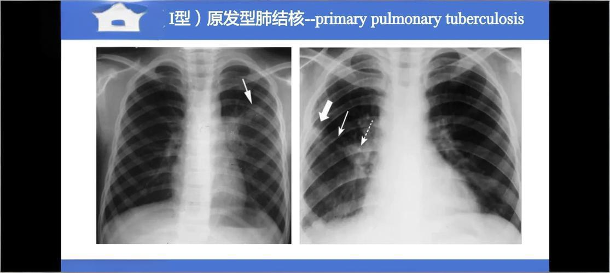
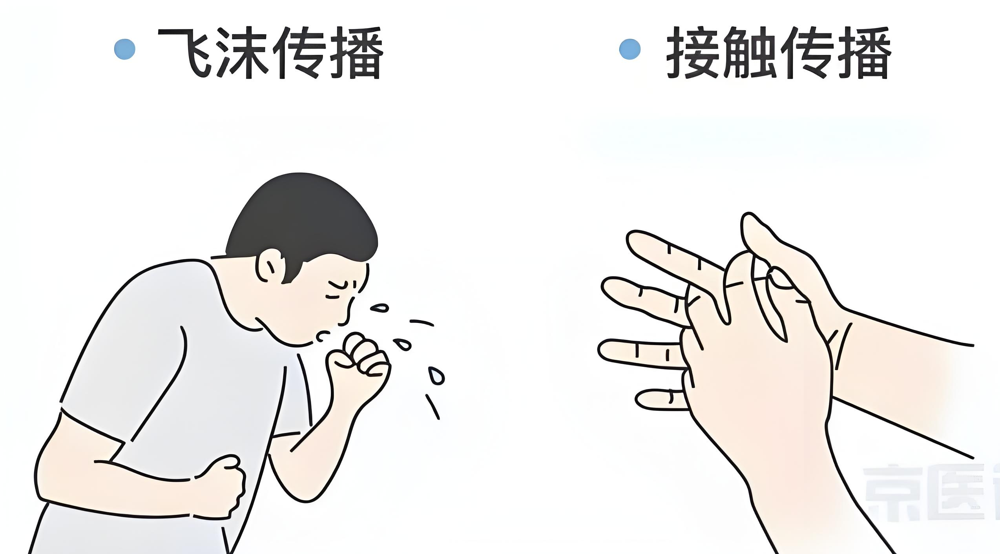

什么是肺结核？
肺结核是由结核分枝杆菌引起的一种慢性呼吸道传染病，主要侵犯肺部。这是一种古老的疾病， 至今仍在全球范围内广泛流行。
当人体免疫力下降时，潜伏在体内的结核菌就会重新活跃起来，破坏肺部组织，形成空洞。 若不及时治疗，可能导致严重的并发症甚至死亡。
主要症状
- 持续咳嗽
- 咳痰带血
- 午后低热
- 夜间盗汗
- 体重减轻
- 疲乏无力

肺结核的分型
原发性肺结核
初次感染结核菌形成的病变，多见于儿童，常表现为肺门淋巴结肿大。
继发性肺结核
曾感染过结核菌的人再次活动性发病，是最常见的类型，好发于成年人。
粟粒性肺结核
大量结核菌进入血液循环播散至全身器官，形成如粟米般大小的病灶。
结核性胸膜炎
结核菌侵袭胸膜腔引起炎症反应，伴有胸痛和呼吸困难。
不同类型的肺结核治疗方法略有差异，确诊后应在专科医生指导下规范化治疗。

传播途径
肺结核是一种典型的呼吸道传染病，其传播过程具有一定特殊性。只有痰涂片阳性的开放性肺结核患者才具有传染性。
1
飞沫传播
患者咳嗽、打喷嚏时产生飞沫，他人吸入后可能感染
2
尘埃传播
干燥的痰液尘埃飞扬被人吸入也可能传播
3
密切接触
家庭成员间长期共处一室容易发生传播
预防措施
- 保持室内通风换气
- 避免随地吐痰
- 加强营养提高免疫力
- 定期体检早发现早治疗
